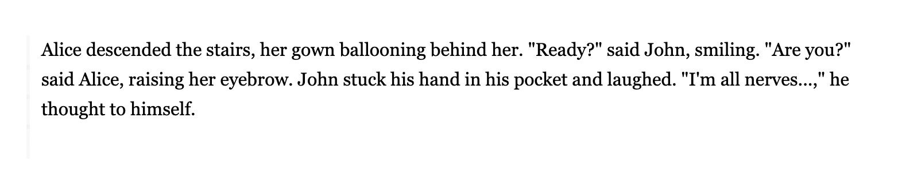
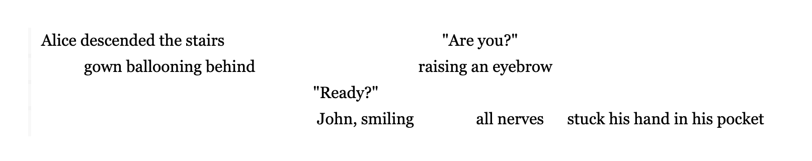
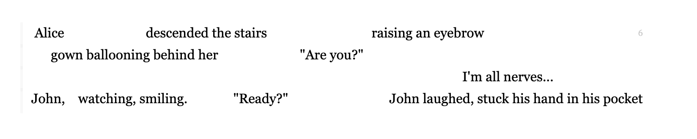

A new writing format. Somewhere between poetry, prose, music, and painting.
Conventional writing borrows its format from oral storytelling. A speaker can only say one word at a time:
But reading is a visual medium. It does not require linear structure. Thought, sensation, dialogue, and experience do not arrive one by one, in linear order, taking their turn. Nor do they need to be rearranged to do so.
The same information could look like this:
Or like this:
Chora is not just a rearrangement of standard prose. The format enables storytelling and expression that is not possible with traditional prose:
Reading chora is like looking at a painting or hearing music. You can process multiple elements simultaneously. Just like a fugue weaves multiple voices together, chora separates narrative elements into distinct parallel lines and then weaves them together to create harmony, simultaneity, and flow.
Line placement makes attribution obvious, eliminating the need for excessive narrative and chronological signposts like "he said," "she said," "he thought to himself," "just then," etc.
Follow the text left to right, scanning up and down as you go. Good Chora should make it obvious where to look next. Do not subvocalize excessively. Try to hold the page at least a foot away from your face - the visual layout takes advantage of your parafoveal vision. You can take in more text than you think.